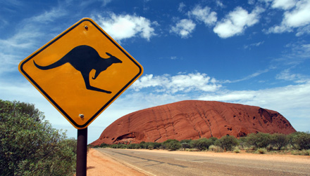
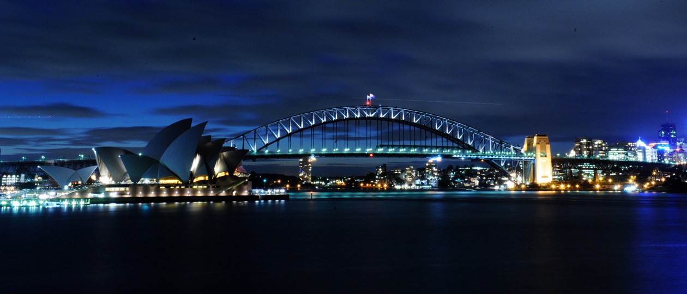

Australia
Officially the Commonwealth of Australia, is an Oceanian country comprising the mainland of the Australian continent, the island of Tasmania, and numerous smaller islands. It is the world's sixth-largest country by total area. Neighbouring countries include Indonesia, East Timor and Papua New Guinea to the north; the Solomon Islands and Vanuatu to the north-east; and New Zealand to the south-east.
Australia is a developed country and one of the wealthiest in the world, with the world's 12th-largest economy. In 2012 Australia had the world's fifth-highest per capita income. Australia's military expenditure is the world's 13th-largest. With the second-highest human development index globally, Australia ranks highly in many international comparisons of national performance, such as quality of life, health, education, economic freedom, and the protection of civil liberties and political rights. Australia is a member of the United Nations, G20, Commonwealth of Nations, ANZUS, Organisation for Economic Co-operation and Development (OECD), World Trade Organization, Asia-Pacific Economic Cooperation, and the Pacific Islands Forum.
 
HOME